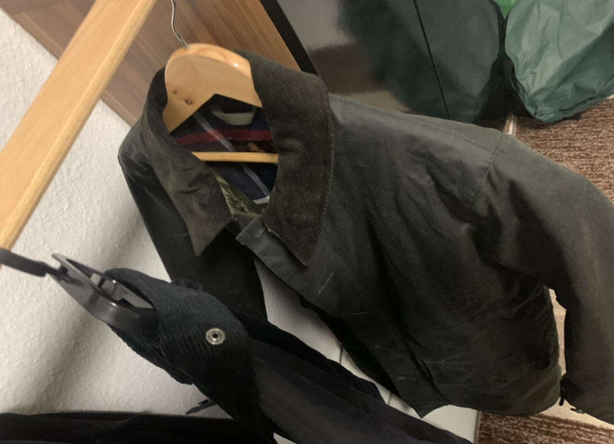
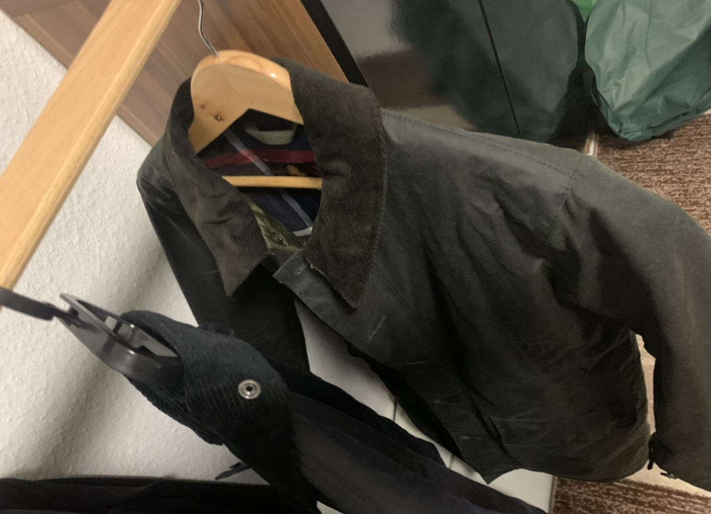

ドイツ滞在の記録(2022年10月)
現在ドイツの大学院にいます. 内部モデル理論を研究しています.
01.10.2022
復活しました. 滞在許可を得る必要があるが, 書類がいくつかあって大変である.
もうすでに日本の冬並みに寒く, 今の装備だと冬を越えられないと思ったのでコートを買いました. しかもちゃんとあったかいコートを買いました.
 

店員さんはイギリス人だった. 試着した時にNot too badと言っていて, イギリス人って本当に言うんだと感動した.
引っ越しました. ここが自分の定住場所になることを祈っています. 家探しの件については後日落ち着いたらまとめます.
一ヶ月大変な思いをしました. 非常に冷たい扱いも時には受けました. 今はただ安らかに生きています.
02.10.2022
明日はドイツ統一の日で祝日らしい. 家具を買いに行こうと思っていたところだったが諦めてIKEAのオンラインストアで注文した. 日本より少々安かった.
しかし引っ越したばかりで寝具がない. 毛布だけは今すぐ必要である. 外出する. 今日は新しく買ったバブアーのコートに足元はハインリッヒ・ディンケラッカーにした.
コートはかなりあったかい. 満足である. エイジングが楽しみである.
至る所にベーカリーがある. ミュンスターでは日本のコンビニが全てパン屋に置き換わったぐらいの頻度で見かける.
朝はそこでパンを食べて, 会話している人をよく見る.
そのあと中心市街まで歩く. ところが日曜日でカフェしか営業していない... カフェ以外の全ての店は閉まっていた.
通りに人が結構いたのでどこかは開いてるだろうと思ったがそんなことなかった. 閉まった店のウィンドウを眺めている人が結構いた.
開店してる時に行けばいいと思った. (私は夜閉店した店のウィンドウを見るのは好きである. 深夜表参道を散歩するのは好きだった. )
諦めて帰宅した. 夜室内の温度は10度を下回るが, 気合いで耐えるしかない.
03.10.2022
今日はドイツ統一記念日で祝日であった. 店もほとんど全て閉まっていた. よって今晩も毛布なしである. 死ぬ.
前日はパン1個だけ食べて, それ以来何も食べてないので空腹で限界だった. お腹空きすぎて足元がふらつき始めたので, ダメもとで店を探しに行った.
今日は比較的あったかい. 最高気温は18度まで上がった. 今日は靴はAUDLEY, アウターはバブアーのボーダーで外出した.
色はブラックである. 最近買ったものより薄手で比較的あったかい日はこちらを着ようと思う. オイルドジャケットがドイツに来てからその本領を発揮している.
こちらの気候やライフスタイルの方が日本のそれよりオイルドジャケットにとって合っているように感じる.
AUDLEYはやはりかっこいいですね. 革の質, 履き心地もとても素晴らしいです.
散歩していると営業しているアジアレストランを見つけました. メニューが400種類近くあった. 全部ドイツ語で読むのにかなり時間がかかる.
体感英語を読むスピードが(当然文章の種類にも依存するが)日本語のそれの3分の1か4分の1くらいで, ドイツ語のそれは英語のそれの1割にも満たないと思う.
さらにドイツ語の語彙はかなり少ない. あと過去形, 完了形とかまだ知らない. オフィシャルなレベルだと一番下のA1.1を今月修了するぐらいである.
それゆえメニューを見ながら吟味が全然できない(当然写真もない). パッと目についた牛肉と炒めたご飯(つまり炒飯)を頼んだ.
あとはVorspeise(前菜のドイツ語である. これぐらいはわかる. )としてタンドリーチキンの串を頼んだ. 肉が食べたかった.
持ち帰りにした. 炒飯が10ユーロ, チキンが7ユーロほどだった.


量, 味ともに申し分なし!!! チキンは見た目通りの味がした. 炒飯がめちゃくちゃ美味しい. 量も十分で野菜も入っている.
ご飯とはこんなにも美味しいものなのだと実感した. やはり食べ慣れているものが一番である. しかもこれが10ユーロとはありがたい.
近所にこれがある